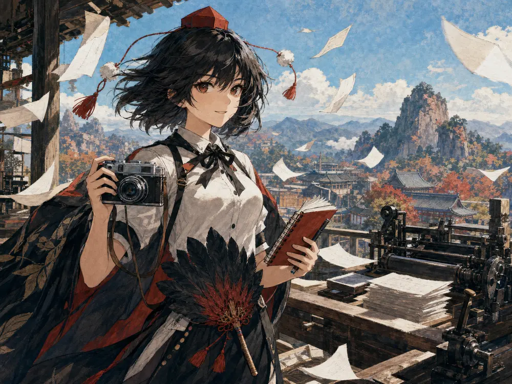
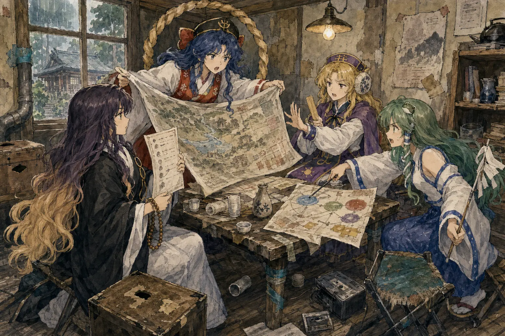
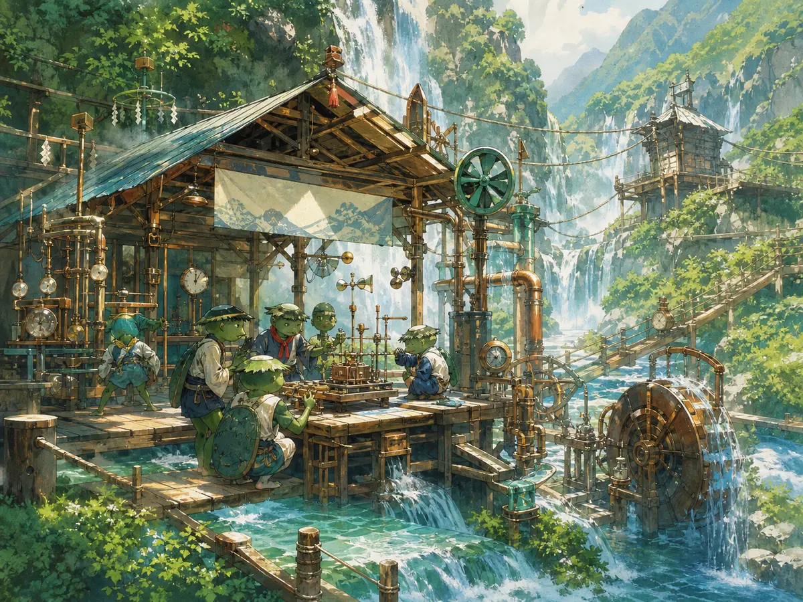

越境求真
不把結界當作知識的終點。每一次跨越，都要留下可追溯的觀察與責任。
BOUNDARY & TRUTH幻想鄉・境界共同校區 OPEN CAMPUS 2026
當歷史可以被吞噬、藥學來自月都、工程沿著瀑布運轉—— 學問就不只是答案，而是人類與妖怪共同生活的方法。
主校區遠眺 博麗門・霧湖圖書館・妖怪山觀測所
PORTAL CAMPUS SERVICES / 校務入口
申請、預約、找空教室，或先看看午餐。
01 ABOUT TU / 學校介紹
幻想鄉立東方大學是一所跨越種族、地域與常識的研究型大學。 我們從幻想鄉既有的知識傳統出發： 稗田家的記錄、寺子屋的歷史、魔法使的實驗、永遠亭的醫藥、 河童的工程與天狗的新聞——讓彼此衝突的觀點，在同一張桌上接受檢驗。
不把結界當作知識的終點。每一次跨越，都要留下可追溯的觀察與責任。
BOUNDARY & TRUTH人類、妖怪、神明與妖精共享課堂；差異不被消去，而被納入方法。
PLURAL SCHOLARSHIP符卡規則提醒我們：最尖銳的交鋒，也可以有名稱、有邊界、有退路。
RULED ENCOUNTER一座結界，七所學院，無數種看世界的方法。
02 IDENTITY / 校訓與傳統
「越境」不是越過他人的界線，而是離開只對自己方便的答案； 「交鋒」不是決出最強，而是讓不同的知識仍能在明天繼續對話。
UNIVERSITY MOTTO
越境求真 以禮交鋒
UNIVERSITY UNIFORM
校慶・境界開學祭
公開講座、河童原型展、百鬼夜行校友會與暮色符卡競演， 於日落鐘響後同時開始。
03 ACADEMICS / 學術單位
從結界治理到月都藥理，每一門學科都必須回答同一個問題： 這份知識將如何改變幻想鄉的共同生活？
04 FACULTY / 師資陣容
教師會把現場經驗帶進講堂，也把自己的麻煩一起帶來。 八個核心教席之外，信仰學院本學期開放四席輪值教學。
INCIDENT STUDIES
BOUNDARY GOVERNANCE
HISTORY & MEMORY
ELEMENTAL MAGIC
APPLIED MAGIC
LUNAR MEDICINE
KAPPA ENGINEERING

◉JOURNALISM
OFFICE OF UNRESOLVED MATTERS / 尚未解決事務室
這裡收的是還沒被會議磨平的案子：太快的頭條、來源不明的材料、 會移動的教室，以及已經臨時修了一百二十九天的水管。

FCP MEETING No. 47 · 桌腳於會中再次鬆脫FAITH + COEXISTENCE POLICY / 信仰與共生政策學院
學院不假裝宗教對話總能順利結束。寺院的共生、神社的基礎設施、 仙人的公共欲望與外界式活動流程，經常在同一筆預算上正面相撞。
05 ADMISSIONS / 招生情報
2026 秋季班接受人類、妖怪、妖精、神靈、魔法使及外界生申請。 不要求天生能力；我們更重視你如何描述一次失敗、查證一則傳聞， 並與立場不同的人完成工作。
不限格式，最多一千字；妖精可用圖像或實地示範代替。
區分看見的事、聽來的事，以及你自己推測的事。
有名稱、有規則、有退路的學術交鋒；不以火力決定錄取。
確認住宿、飲食、月相與種族安全需求，結果同日放榜。
EXAM ADMISSIONS EXAM / 入學試驗
選擇一份試卷，在八分鐘內完成八題。交卷後立即判分、逐題解析， 成績只保存在這台裝置，重考會重新排列題目。
06 CAMPUS MAP / 校園地圖
主校區依大結界內側山勢展開。步行時間以人類平均速度計； 妖精、天狗與間隙移動者請遵守空路分層。
GENSOKYO CAMPUS TRANSIT
選擇步行、掃帚、天狗風路或竹林兔車；每一種交通都有自己的停靠點與接駁路線。
07 RESEARCH / 研究成果
它讓我們知道：哪些傳說正在保護人，哪些裝置會在雨天漏電， 以及一場異變究竟何時需要被制止。
BOUNDARY OBSERVATORY · 2026
結界觀測所與香霖堂建立非侵入式登錄流程，記錄外界物品進入幻想鄉時的 語義變化，不嘗試擴大裂隙，也不以持有人記憶作為實驗材料。
工學 OPEN HARDWARE
讓不具妖力的村落也能維護的小型水力系統；維修手冊採圖像優先。
醫藥 PUBLIC HEALTH
研究波長、焦慮與空間判斷的關係；路徑提示不收集個體能力資料。
人文 SOURCE ETHICS
把新聞、村落口述與當事人記錄並置，教學生辨認敘述位置與沉默。
符卡學 DANMAKU DESIGN
把宣言、預兆、彈幕密度與退路窗口拆開測量，尋找「華麗但仍然能讀懂」的編排條件。
08 CAMPUS LIFE / 校園風采
從霧湖自習到妖怪山實作，再到一年一度的符卡燈會。 校園不是避開差異的結界，而是學習如何一起生活的地方。
01 / STUDY

02 / FIELDWORK
03 / FESTIVAL
CLUBS 本年度登錄社團
09 CAMPUS BBS / 校園掲示板
課程互助、失物招領、社團募集與校務提案集中於此。 發言前請確認板面；速報仍請投往新聞學院。
10 FAQ / 常見問題
如果答案會因滿月而改變，我們會特別註明。
可以。能力不是錄取條件。清楚觀察、願意修正，以及在規則內與他人合作， 比先天能力更重要。
錄取後由博麗側窗口安排受控報到；開放日訪客請依預約時刻， 在博麗神社外側參道等候引導，切勿跟隨來歷不明的傘或蝴蝶。
不需要。它借用「有名稱、有規則、有退路」的結構進行觀點答辯， 不測火力，也禁止以能力干預評審。
不可以。採訪、攝影、讀心、波長干預與歷史操作都受研究倫理規範； 能做到一件事，不等於得到同意。